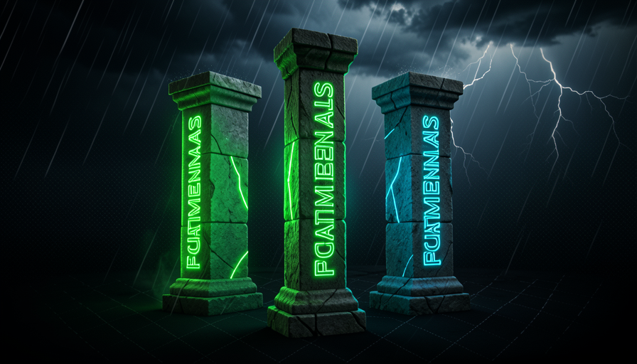
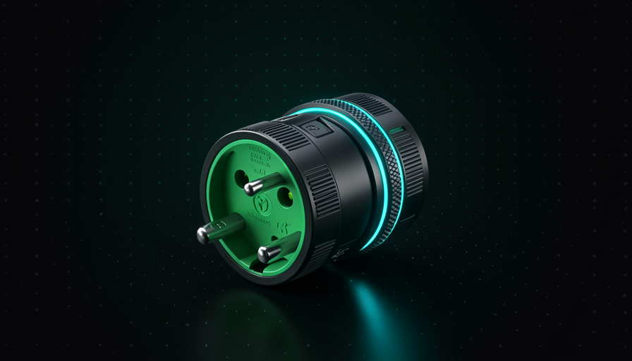

📖 Glosario vivo (lee antes — vuelve siempre que lo necesites)
Los términos que vuelven a aparecer (modelo, prompt, agente, skill, harness, codebase) ya se definieron en el módulo 1.1. Aquí están los nuevos de este módulo:
🧭 Mantenerse agnóstico
🧠 Imagínalo así: tú compras un taladro que solo acepta brocas de una marca. Mientras esa marca exista y sea buena, perfecto. El día que salga una broca mejor (o la tuya desaparezca del mercado), todo tu taladro se convierte en basura. Ahora imagina un taladro con un encaje universal: cambias la broca y conservas el taladro. Una configuración agnóstica es el taladro universal.
En el módulo 1.2 concluimos que no vale la pena quedarse esperando la IA mejore. Pero en el módulo 1.1 vimos que el modelo cambia todo el tiempo. ¿Cómo actuar ahora sin depender de un modelo que quedará obsoleto en tres meses? La respuesta de Matt Pocock es mantener tu configuración agent-agnostic (agnóstico al agente).
Agnóstico significa: tu harness — tus prompts, tus skills, la forma en que tu codebase está organizado — no depende de qué IA hay dentro. En sus palabras: "mantén el harness independiente del agente y aplica buenos fundamentos → seguirá funcionando con el próximo modelo." La consecuencia es poderosa: cuando salga un modelo mejor, solo cambias el motor. El auto (que pasaste tiempo ajustando) sigue valiendo. Es lo opuesto a reconstruir todo con cada lanzamiento, y por eso Pocock dice que no es un «pundit» (opinólogo), solo está "haciendo lo mejor que puedo con lo que tengo ahora."
Integración universal: cualquier modelo se conecta al mismo harness. Cambiar el motor no desarma el auto.

⚠️ Error común de principiante
Confundir «agnóstico» con «no usar el mejor modelo». Es lo contrario: tú usa lo mejor de hoy: solo que no construye nada que solo funcione con él. Usar el mejor motor y tener una integración universal no son opuestos; son las dos mitades del mismo plan.
En 1 frase: agnóstico = encaje universal: cambias el modelo sin reconstruir el harness.
⛓️ El costo de optimizar para uno solo
🧠 Imagínalo así: una prenda hecha a medida para el cuerpo de una sola persona. Le queda perfecta. Pero nadie más puede ponérsela, y si esa persona sube 2 kilos, la prenda ya no le sirve. Optimizar demasiado para un modelo es coser la prenda tan ajustada que cualquier cambio la rompe.
Optimizar es bueno, pero esconde un veneno en la palabra overoptimizar. El propio Pocock confiesa el riesgo, con una frase que vale la pena recordar: "If I over-optimize around a model... I lose focus on the fundamentals" (si optimizo demasiado para un modelo, pierdo el foco en los fundamentos). Cuando adaptas cada prompt, cada skill y cada truco al estilo específico de un modelo, creas un dependencia de proveedor: cambiar pasa a doler tanto que simplemente no cambias, incluso cuando deberías.
El costo aparece de tres formas. (1) Trabajo repetido: sale un modelo nuevo, y tus prompts «mágicos» que dependían de un truco del anterior dejan de funcionar: tienes que rehacer todo. (2) Ceguera: tú te involucras tanto en los trucos de un modelo que no te das cuenta cuando otro, más barato, ya haría lo mismo. (3) Fragilidad: tu configuración se convierte en un castillo de naipes ajustado a un solo motor. Pocock equilibra las cosas (el famoso 50/50 del módulo 1.1): el esfuerzo inteligente se dedica al harness, pero el harness no puede casado con el motor. Optimiza el auto, no la dependencia del motor.
Recuperación rápida: ¿cuál es el peligro de over¿optimizar para un solo modelo?
En 1 frase: sobreoptimizar para un motor es como un traje a medida: perfecto hoy, basura en el próximo lanzamiento.
🏛️ Fundamentos que no caducan
🧠 Imagínalo así: la moda cambia cada temporada, pero saber coser nunca pasa de moda. Quien solo compra la ropa del momento depende de la tienda. Quien sabe coser se viste en cualquier temporada. Los fundamentos del software son «saber coser».
Esta es la frase más importante de todo el método, y Pocock la repite: "People are focused on the wrong thing — the big shiny new thing — when in fact just focus on the stuff that's been working for 30-40 years." Dicho de otro modo: la gente mira el juguete nuevo y brillante, cuando lo que importa es enfocarse en lo que funciona desde hace 30-40 años. Estos son los fundamentos — y, por definición, son agnósticos: ningún modelo de IA puede invalidarlos.
¿Cuáles son? Versionar con git (el «botón de deshacer» de tu proyecto), escribir pruebas (pruebas automáticas de que el código funciona), organizar bien los archivos, documentar lo suficiente, definir claramente el alcance de las tareas. Fíjate: nada de esto tiene que ver con «qué IA». Son principios de ingeniería que servían antes de la IA y siguen sirviendo después. Y aquí está la clave: cuando tu base de código respeta estos fundamentos, cualquier el modelo trabaja mejor con él — incluso los más baratos (lo verás claramente en el módulo 1.5). Los fundamentos no son «la forma antigua»; son la base que hace funcionar la nueva forma.
Los modelos pasan de largo; la base de fundamentos permanece. Construye sobre ella.
Profundiza (opcional): ¿por qué «30-40 años» y no «para siempre»?
Pocock usa "30-40 años" porque es la antigüedad aproximada de las prácticas que se volvieron consenso en la ingeniería de software: control de versiones moderno, pruebas automatizadas y diseño modular. No es que sean eternas: es que sobrevivieron a decenas de "próximas grandes cosas" (la web, los dispositivos móviles, la nube) sin perder su valor. Una práctica que resistió todo eso probablemente también resista la próxima ola de IA. Es una apuesta basada en probabilidades, no en la fe.
En 1 frase: la moda (el modelo) cambia cada temporada; saber coser (los fundamentos) nunca pasa de moda.
🌀 El vibe coder que cambia cada semana
🧠 Imagínalo así: alguien que cambia de gimnasio cada semana buscando la «mejor cinta de correr del mercado», pero nunca termina un entrenamiento. Equipo nuevo todo el tiempo, ningún músculo. La cinta no es el problema: la falta de constancia sí.
Pocock da un ejemplo concreto del antipatrón: el vibe coder que "cambia de herramienta cada semana (replit → lovable → …) y nunca aprende ningún principio." Cada semana sale una app o un modelo nuevo, y la gente migra: nuevo dashboard, nuevos atajos, una nueva promesa. El problema no es la curiosidad: es que cada cambio reinicia el aprendizaje. Quien nunca pasa suficiente tiempo en una herramienta nunca llega más allá de su superficie.
Aquí está el matiz que Pocock insiste en señalar: "la diferencia está en el ENFOQUE, no en creer o no en la IA." Él no está diciendo «no uses IA» ni «la IA es puro hype». Tanto él como el vibe coder creen en la IA; la diferencia es el manera. El vibe coder optimiza para la novedad (la herramienta del momento); el método Pocock optimiza para los fundamentos (la habilidad que perdura). Es exactamente la trampa del módulo 1.2 vista desde otro ángulo: en vez de quedarse esperando a que el modelo mejore, el vibe coder persigue cada modelo nuevo, y ambos extremos dan el mismo resultado: nunca construir nada que dure.

✗ Vibe coder (optimiza por la novedad)
- • Cambiar de herramienta con cada nueva moda.
- • Reaprendes la interfaz y olvidas el resto.
- • Nunca ir más allá de la superficie de nada.
- • La configuración se vuelve un mosaico de remiendos.
✓ Método Pocock (optimiza los fundamentos)
- • Usa el mejor modelo de hoy, sin casarte con él.
- • Invierte en git, pruebas y organización.
- • Profundiza: la habilidad se acumula.
- • Configuración agnóstica que sobrevive al cambio.
En 1 frase: el vibe coder cambia de herramienta cada semana y nunca aprende nada — la diferencia está en el enfoque, no en la fe en la IA.
🛡️ Blindar tu setup
🧠 Imagínalo así: una cocina profesional. Las recetas (skills) están en fichas; los ingredientes (codebase), organizados; las estufas (modelos) se pueden cambiar sin rehacer el menú. Mejoras un poco la cocina cada día, pero usas la mejor estufa disponible.
"Blindarse" no es dejar de evolucionar — es todo lo contrario. Pocock y David Ondrej coinciden en un punto práctico: mejora activamente la configuración, todos los días (Ondrej menciona cosas como VPS, Tailscale, etc.) Y usa el mejor modelo. Las dos cosas juntas. El secreto es dónde tú inviertes ese esfuerzo en las piezas que permanecen (skills bien redactadas, codebase organizado, fundamentos), no en trucos ligados a un motor que se irá. Mueves todas las palancas del módulo 1.1, pero te enfocas en las que son agnósticas.
Incluso hay una advertencia de prudencia en el método: Pocock espera cerca de un mes antes de adoptar un modelo nuevo en el flujo de producción (fue lo que hizo con el Opus 4.5). No es miedo a las novedades: es dar tiempo para saber si el nuevo motor realmente encaja sin sorpresas. Una configuración blindada significa que adoptas lo mejor, pero a tu ritmo, sin que cada lanzamiento se convierta en una emergencia.
🔬 Ejemplo resuelto: el lanzamiento de un modelo nuevo
Escenario: sale el «Modelo X 2.0» y todo el mundo se entusiasma. Dos desarrolladores reaccionan:
Configuración frágil (acoplada)
Deja todo, migra de inmediato. Los prompts antiguos dependían de trucos del modelo anterior → dejan de funcionar. Pasa 3 días reescribiendo skills. Después descubre que la mitad de la mejora era puro hype.
Configuración blindada (agnóstica)
Cambia solo la línea del modelo en el config. Ejecuta los pruebas existentes para comparar. Espera ~1 mes de uso real. Skills y codebase no cambian: el encaje es universal. Migración: 5 minutos.
En 1 frase: blindar = mejorar la configuración cada día y usar el mejor modelo, pero solo en las piezas que se quedan.
✅ Lista de verificación de agnosticismo
🧠 Imagínalo así: antes de cualquier decoración en la casa, el albañil revisa los cimientos. Esta lista de verificación es tu «inspección de los cimientos» — ejecútala antes de dedicar tiempo a optimizar trucos del modelo.
Para cerrar: cada vez que vayas a adoptar una nueva herramienta, prompt o truco, haz una pregunta de filtro — «¿esto sigue siendo válido si mañana cambio de modelo?». Si la respuesta es no, estás creando dependencia, no patrimonio. La lista de verificación de abajo es el resumen práctico del módulo. Cópiala, pégala al principio de tu proyecto y ejecútala antes de cada decisión de configuración:
VISTORIA DE AGNOSTICISMO — rode antes de cada decisão de setup
Pergunta de filtro: "isto continua valendo se eu trocar o modelo amanhã?"
[ ] MODELO trocável? Mudar de IA é editar 1 linha de config — ou refazer tudo?
[ ] SKILLS portáteis? Funcionam em Claude Code, Codex etc. — ou só num app?
[ ] FUNDAMENTOS no lugar? git + testes + organização + docs + escopo claro.
[ ] PROMPTS sem manha? Pedidos claros em inglês/português simples,
não truques que dependem de um modelo específico.
[ ] CODEBASE organizado? Qualquer modelo (até o barato) navega fácil.
[ ] RITMO próprio? Adota modelo novo quando comprovado (~1 mês), não no hype.
3+ "não" = seu setup está casado com um motor. Blinde antes de otimizar.
Recuperación rápida: ¿cuál es la "pregunta de filtro" del checklist agnóstico?
En 1 frase: antes de adoptar cualquier cosa, pregunta «¿sobrevive al cambio de modelo?»; solo lo que pase entra en la configuración.
🧾 Resumen del módulo
Próximo módulo:
1.4 — DX × AX: diseñar el codebase para que el agente trabaje bien (Agent Experience).